3. Viaje por el Sur de España, Jaén y Granada
3. Viaje por el Sur de España, Jaén y Granada
28 a 31 de agosto de 2021
Día 3, Granada
30 de agosto de 2021


59. Granada
59. Granada
Primeramente salgo del hostal que esta en pleno centro de Granada, junto al paseo de la Bomba al lado del río Genil. Destacan dos fuentes, la de los leones y la fuente de las Granadas.
Continuo hacia la magnífica Basílica de las Angustias donde esta la patrona de Granada. Esta basilica tuvo su origen en una anterior ermita que estuvo dedicada a las Santas Úrsula y Susana, y que figuraba como anexa a la parroquia de San Matías, erigida en el año 1501. Como era muy querida y muy visitada se amplio de tamaño elevandola a iglesia.
Por ello se alzó en 1585 una pequeña iglesia en la cual se veneraba entonces una nueva imagen sustituyendo a la primitiva.
El interior es de estilo barroco y muy decorado con tallas de gran calidad. Es de gran interés el camarín que preside el retablo mayor de la iglesia, donde se aloja la imagen de la Virgen, Nuestra Señora de las Angustias, patrona de la ciudad de Granada, que aunque construido a la vez que la iglesia fue redecorado con posterioridad con todo el fausto del barroco, constituyendo así una de las obras del tipo churriguera más representativas en Granada, con su pompa de doradas hojarascas y espléndidos mármoles de colores.
Continuo y llego a pleno centro granadino en una de las dos plazas más importantes,
la plaza del Campillo. Con
la fuente de las Batallas y el teatro Isabel La Católica. Sigo hacia la avenida de los Reyes Católicos y visito
la plaza del Carmen donde esta
el ayuntamiento, edificio del siglo XIX.
Un poco a más distancia encontramos la dobla de oro, con su patio árabe, monumento gratuito que entra dentro de los monumentos destacados que se están promocionando en la ciudad y para los otros hay que pagar un billete que te da acceso a otros 5 más.
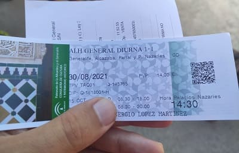
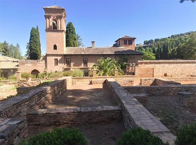
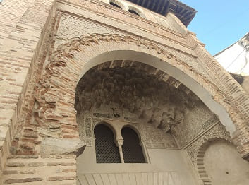
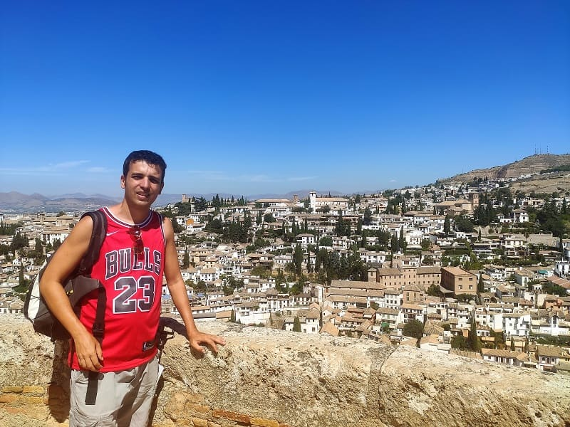
Seguimos más hacia delante y nos topamos con
la plaza Isabel La Católica, con su fuente característica, la segunda plaza más importante junto a la del Campillo.
Sigo recto y ya llego
al palacio Real de la Chancillería. Este edificio es el mejor ejemplo de manierismo de la provincia. Este estilo es el precedente del barroco y es un estilo renacentista con muchos más detalles pero siguiendo las proporciones de la era clásica.
Junto a ella
la fuente Pilar del Toro y la iglesia de San Gil junto a la oficina de Turismo. Esta iglesia del siglo XVI fue destruida en la revolución de 1868 y sus restos serían traidos a esta otro templo que era el de Santa Ana. Todo lo de valor llegaría ahí y sería remodelado el interior a imagen de la iglesia de san Gil. Tiene una mezcla de estilos, entre mudéjar y barroco.
Ahí obtendré información para hacerme el mapa de que ver después de la Alhambra, visita obligada de la ciudad. A partir de ahí pongo rumbo a la Alhambra.

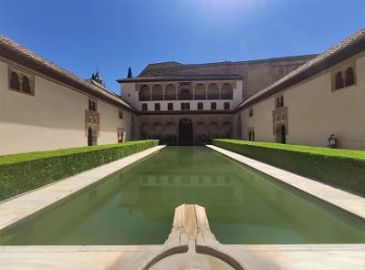
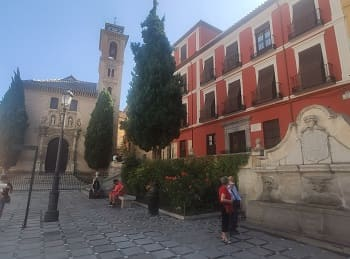
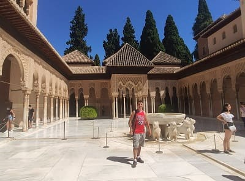
Lo primero que veo de camino
al palacio de la Alhambra, según subo por la cuesta empedrada, es
la Puerta de la Justicia, y también el Pilar de Carlos V. Para poder acceder al recinto es necesario comprar el billete que se compra desde el pabellón de acceso ya al final.
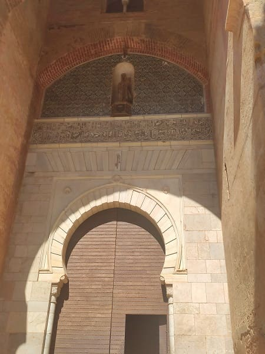
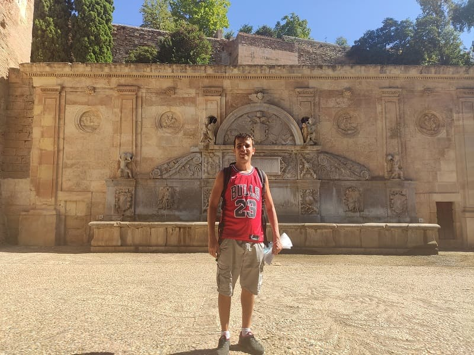
Una vez dentro vi todo por este orden,
la puerta de los Siete Suelos, el palacio de Abencerrajes, la puerta de los Carros, la iglesia de Santa María y el palacio de Carlos V. Dentro de este palacio hay una sala de exposiciones permanente. Impresiona bastante el palacio por fuera y el propio patio.

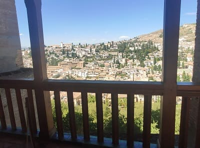
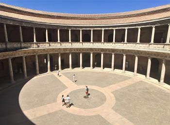
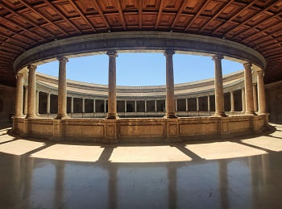
Una vez visto, voy a
la puerta de Vino, camino de la Alcazaba, con pasos como la plaza de los Aljibes, la torre Quebrada, la torre del Cubo, la Torre de la Vela, y saliendo ya hacia el jardín de los Adarves. La cita para
los palacios Nazaríes lo tenía a las 14:30 del medio día, y después de un pequeño paseo por el recinto entrare.
En la siguiente imagen se puede observar Granada desde la torre de la Vela de la Alcazaba.
En estas imágenes vemos el artesonado nazarí próxima al patio de Arrayanes. El patio de arrayanes es uno de los patios del palacio de Comares de la Alhambra. Esta al este del patio del Cuarto Dorado y al oeste de la sala de Baños y patio de los Leones.
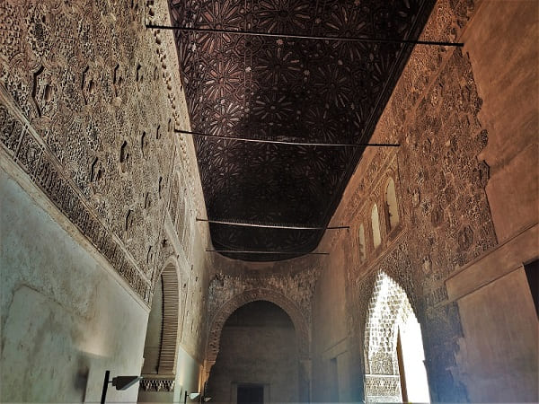
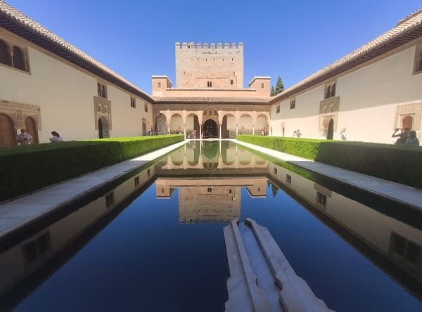
A continuación el patio de los Leones tan famoso. De finales del siglo XIV. Los arcos del patio y la decoración se inspiran en el patio de doncellas de los Reales Alcazares de Sevilla.
Por otro lado en la última imagen el techo de la sala de Reyes del palacio. Existen varias pinturas y en este caso se representan los diez reyes de la dinastía nazarí. La pintura es una mezcla del estilo árabe y el italiano ya que se enviaron artistas desde castilla. No olvidemos que hubo una guerra del trono un siglo antes de la conquista de Granada y un bando fue ayudado por los cristianos.
Otro de los techos más bonitos están en la sala de mocarabes en la que Felipe II dejaría su huella poniendo su escudo, cuando Portugal y España eran un solo imperio. Carlos V también dejaría su huella en el palacio, teniendo una sala propia con un artesonado personalizado. Pero aún así no conformándose con eso creó su propio palacio imperial dentro del complejo como he citado antes.
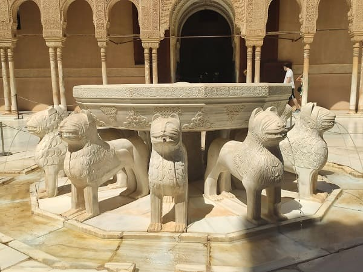
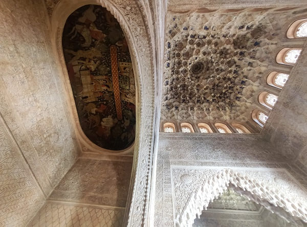
Ya dentro de los palacios Nazaríes me encuentro en este orden el Patio de los Comares, los baños de Comares, la sala de Mocárabes, después el patio de los Leones (en la imagen), la sala de Dos Hermanas, la sala de Abencerrajes, y la sala de los Reyes. Todo esto es la joya de la corona de Granada, las salas y la arquitectura más importante que nos dejaron los árabes en la península.
Después paso por la sala de Carlos V, el Peinador de la Reina, el Salón de Embajadores, la Torre de Comares, el Patio de la Rejaa, todo esto ya más posterior con Carlos V que aumento las estancias pero conservando toda las representaciones árabes. Una vez fuera del palacio me encuentro otro palacio como es el Partal y la Torre de las Damas, así como los restos del palacio de Yusuf.
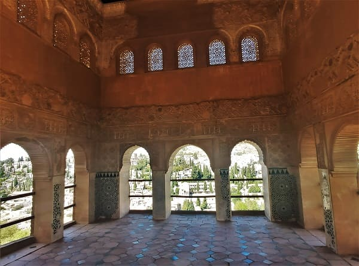
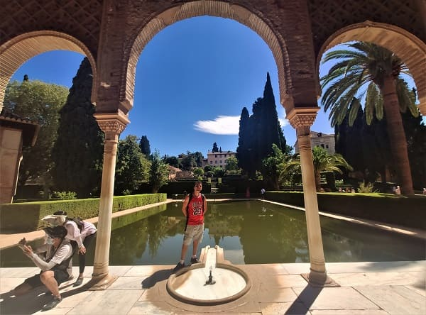
Después recorrí toda la muralla viendo las diferentes torres y puertas de la muralla hasta llegar al Generalife, su palacio y sus jardines que se ven en la imagen, así como la escalera de agua y el mirador romántico. Una vez visto el Generalife salí del recinto con llegada a la Puerta de las Granadas.
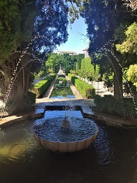
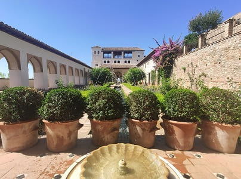
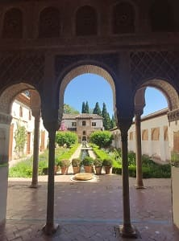
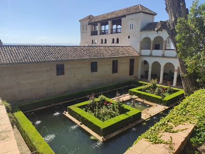
Ya a la salida continuo en paralelo al río Darro, donde visitaría
los baños árabes en El Bañuelo, algo más pequeños que los de Granada pero conservados completamente. Este monumento entraba con el bono de 5 de la oficina de turismo.

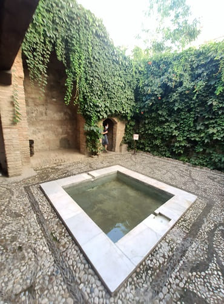
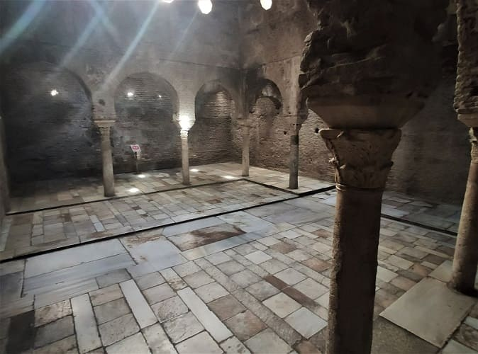
Seguimos con la puerta del Tablero,
la casa de Castril, la iglesia de san Pedro y san Pablo, el convento de san Bernardo. Llego al Paseo de los Tristes donde comeré en un restaurante. Allí esta la casa árabe del Horno (que se ve en la imagen) de Oro que junto a la Dobla de Oro, el Bañuelo, la casa del Chapiz que veré posteriormente y el palacio de Dar Al Horra forman parte del conjunto de esos 5 monumentos visitables que están promocionando.
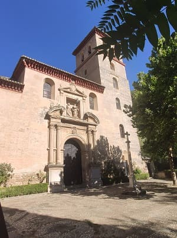
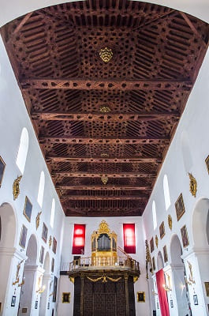
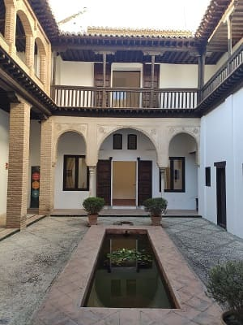
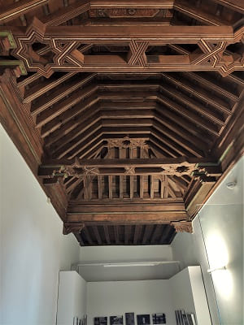
Después subiría para ver
la casa del Chapiz. Son un conjunto de dos casas que muestran como eran las residencias de los moriscos en el siglo XV y XVI aunque su origen es anterior. Después de ser expulsados el rey Felipe II se las daría a un secretario personal suyo que las arrendaría a gente del pueblo. En el siglo XX serían restauradas y puestas en valor.
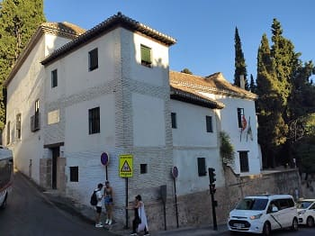
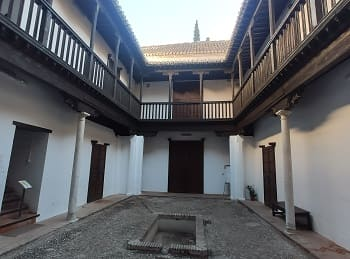
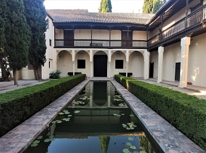
El palacio de Dar Al Horra que esta en el barrio del Albaicin se trata de uno de escasos edificios nazaríes que siguen completamente en pie en la ciudad, aunque, desafortunadamente, su estado de conservación no sea el que le correspondería por su belleza, historia y por el legado que nos cuentan sus muros.
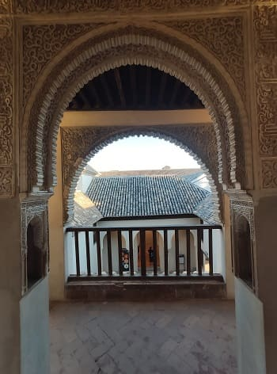
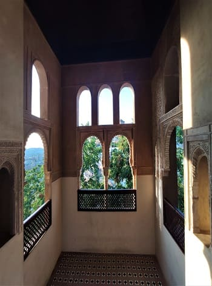
Desde el barrio del Albaicín visitaría primero
la iglesia del Salvador, y después
la iglesia de San Nicolas, ambas de estilo mudéjar del siglo XVI y su magnifico mirador hacia la Alhambra, la gran mezquita de Granada que tenía también un mirador con buenas vistas.
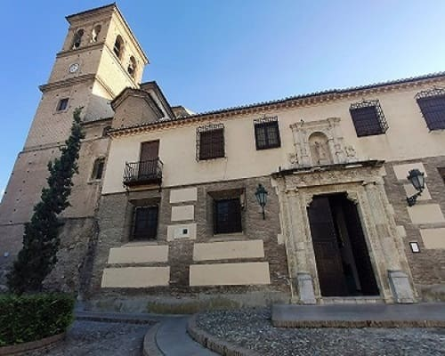


Estas son las vistas desde el mirador:
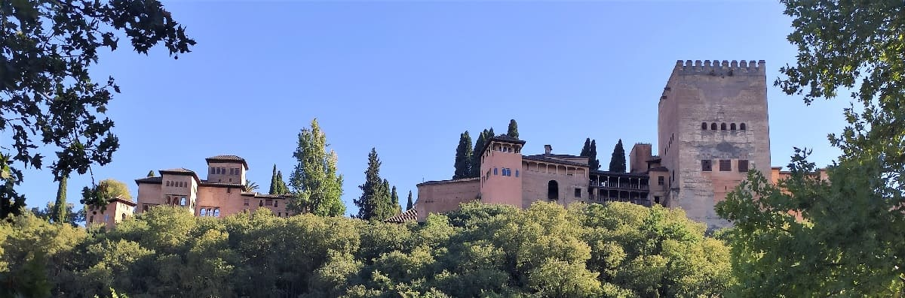
Siguiendo hacia abajo la placeta del Cristo de las Azucenas para ver
el convento de Santa Isabel la Real que posee una iglesia con pinturas, esculturas y adornos de principios del siglo XVI. Fue construido sobre un palacio de la época islámica.
Junto a este convento nos encontramos la plaza del gallo con
la iglesia de san Miguel, que se ve en la imagen, con un retablo de estilo barroco muy recargado y un techo mudéjar que esta en perfecto estado. Al lado de esta el palacio mencionado antes, el de Dar Al Horra, que es de la misma época que la Alhambra.
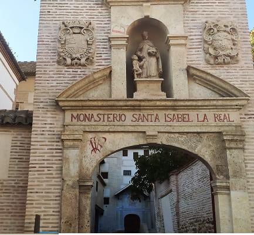


Bajando por la calle hacia el barrio de la catedral, pasamos por otro edificio religioso como la iglesia de san Jose y antes de ver la catedral visitaremos
el Santuario del Perpetuo Socorro, edificio de finales del siglo XVII de estilo renacentista.
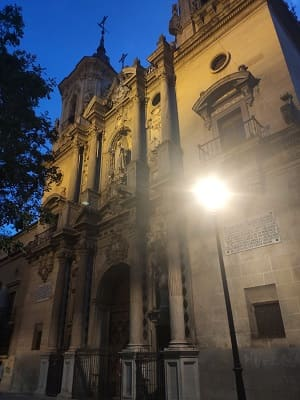
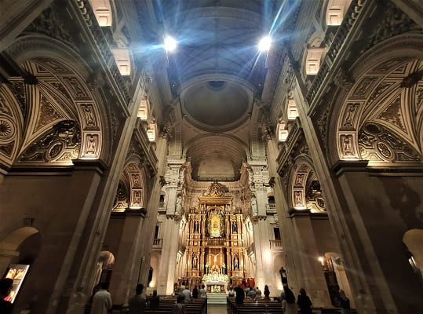
En frente la
el Monasterio Real de san Jerónimo, edificio religioso más importante de Granada, incluso por delante de la catedral, seguido del Sacromonte y de la Cartuja. Este edificio se empezó a construir a principios del siglo XVI por orden de Carlos V. El estilo predominante era el gótico de la época, por ello el exterior lo tiene casi al completo. Dos décadas después del inicio de las obras cambiarían de arquitectos debido al cambio en los promotores de la obra que pasa a ser la familia del Gran Capitan, uno de los soldados más importantes en la historia de España. Esto venía porque se iba a ejecutar la Capilla de este famoso soldado, cuyos restos reposan actualmente en el monasterio. Se pasaría del gótico isabelino a un estilo renacentista que desembocaría a finales de las obras en el estilo manierista. El programa iconográfico fue pensado con el fin de resaltar las grandezas militares y la heroicidad del Gran Capitán, que se halla enterrado en el crucero junto a su esposa, María de Manrique. El monasterio es muy grande y cuenta con dos claustros.
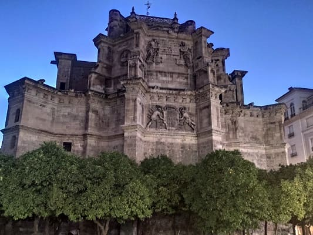
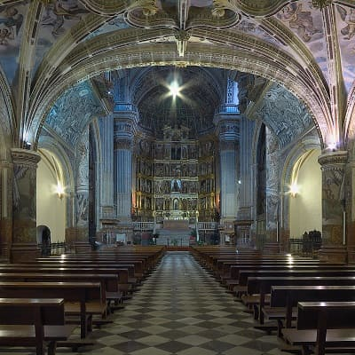
Cerca del monasterio se encuentra
la iglesia de Justo y Pastor de finales del siglo XVI de estilo renacentista.
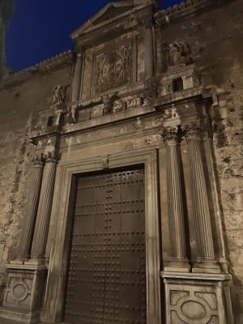
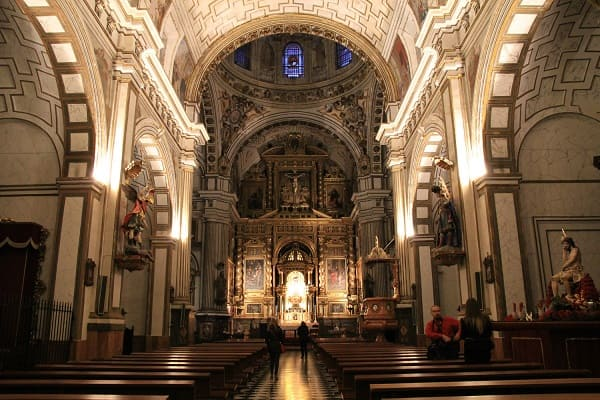
Para acabar una visita por
el barrio de la catedral, del siglo XVI, que sería iniciada por Carlos V con objeto de engrandecer Granada y poner fin a cualquier vínculo con el islam.
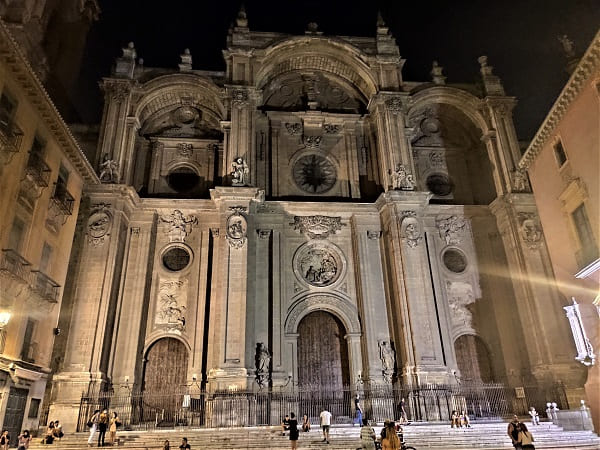
Se hará un panteón para sus abuelos los Reyes Católicos que fueron los que culminaron con la toma de Granada. Este panteón es
la capilla Mayor y es una de las obras funerarias más prestigiosas del siglo XVI.
A las afueras e la catedral esta la Alcaicería, antiguo mercado o bazar árabe y
el palacio de la Madraza (en la imagen de abajo), impresionante por dentro con adornos y muros arabizados como los que se ven en la Alhambra y también
el palacio episcopal o de la curia de granada que se ve en la imagen segunda.
Volvemos por la calle Pavaneras, perpendicular a la calle de los reyes católicos con dirección al hostal. De camino vi
el convento de san Francisco por fuera, el palacio de los marqueses de Casablanca, el edificio de la capitanía general (en la imagen), el palacio de los condes de Gabia, la iglesia de las comendadoras de Santiago y la iglesia de san Matías.
Con esto ponemos punto y final a la visita por Granada donde quedarán por ver todos estos monumentos vistos rápidos desde fuera que habrá que visitar por dentro en otra visita.
Palacio de la Alhambra, s.XI-XIV.
6
Día 4, Granada a Motril y a Guadalajara
31 de agosto de 2021
Primeramente visité algunos sitios que me quedaron por ver como es el Cuarto Real de Santo Domingo, palacio árabe anterior a la Alhambra . Del palacio queda la solamente una sala, con sus puertas y artesonados, así como restos de excavaciones de lo que fue en su día. Complementa una exposición de imágenes y maquetas sobre la Alhambra para ver su parecido.
Cerca del palacio la iglesia de Santo Domingo.
Y la iglesia de san Mateo.
Después cogí el coche camino de Motril.


60. Motril
60. Motril
En Motril fui a la playa pasando por el santuario de Nuestra señora de la cabeza, iglesia construida en el siglo XVII sobre la antigua alcazaba árabe y que se encuentra en el parque de los pueblos de América. Este parque contrasta mucho con el terreno árido que hay alrededor.
Por último, vuelta a Guadalajara, casi 700 kms ...
Santuario Nuestra Señora de la Cabeza, s.XVII y playas.
I
Día 1, de Guadalajara a Jaén (CLICK para continuar)
30 de agosto de 2021
![[Valid RSS]](https://www.onepointsync.com/wp-content/uploads/2016/08/valid-rss-rogers.png "Validate my RSS feed")